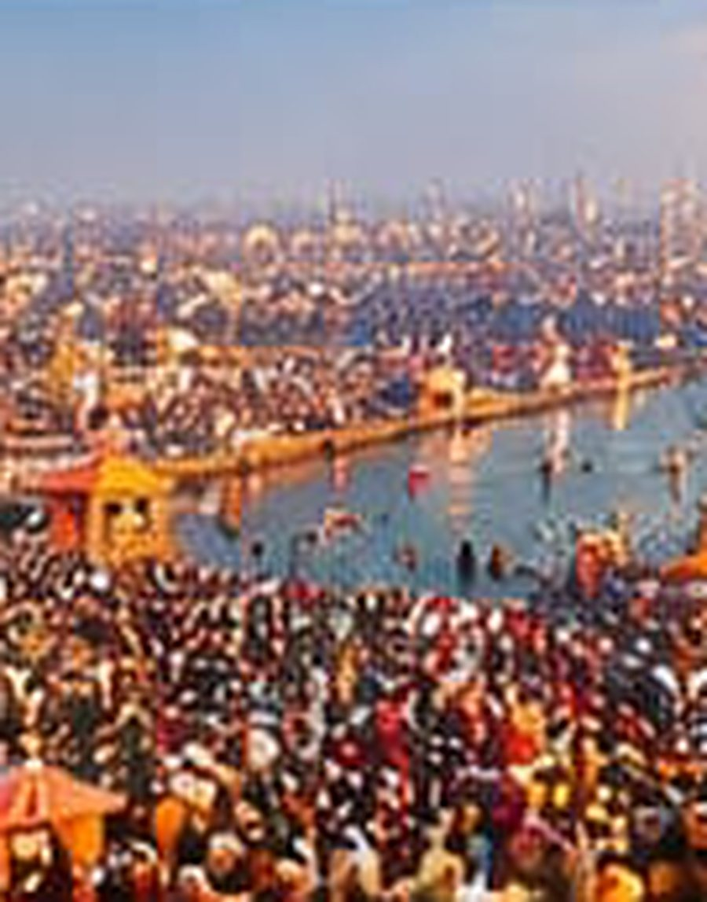
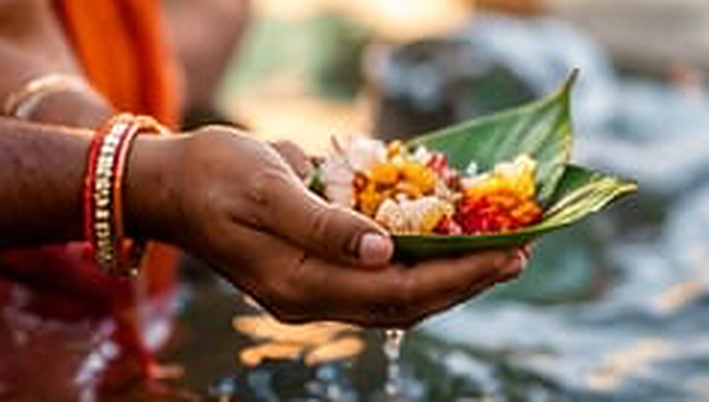

Our Service
Your Devotion,
Your Devotion,
Our Responsibility
For devotees who cannot travel to the sacred event, we perform the Punya Snan ritual on your behalf using your photograph and share the recorded video with you, so you can still be a part of this divine moment.
Learn More
Simple Process
How It Works
A simple and transparent process to connect you with divine blessings.
-
01
Submit Request
Fill in your details and upload photograph.
-
02
We Perform Ritual
Our team performs the holy ritual at the sacred site.
-
03
Video Recording
The complete ritual is recorded.
-
04
Receive Video
We share the video with you.
Event Information
Upcoming Sacred Event
Be a part of the divine celebration, even from afar.